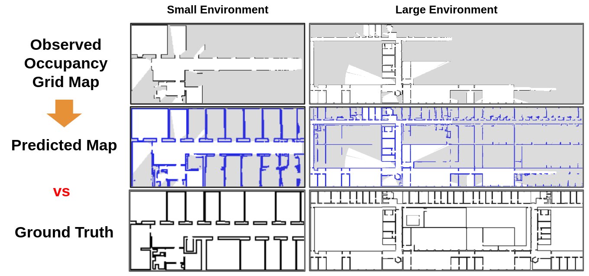
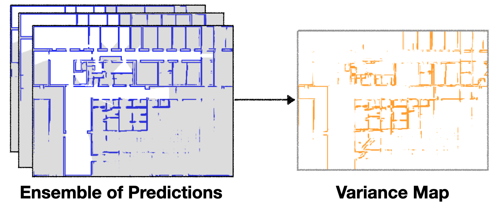
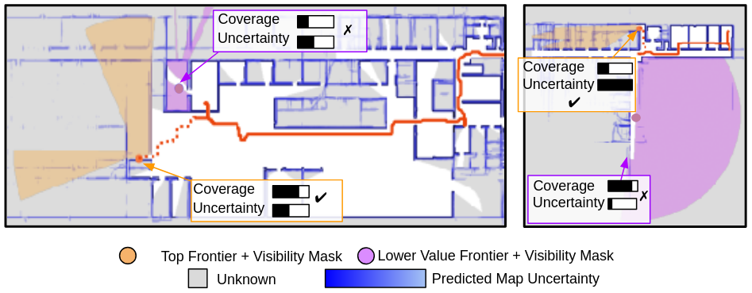
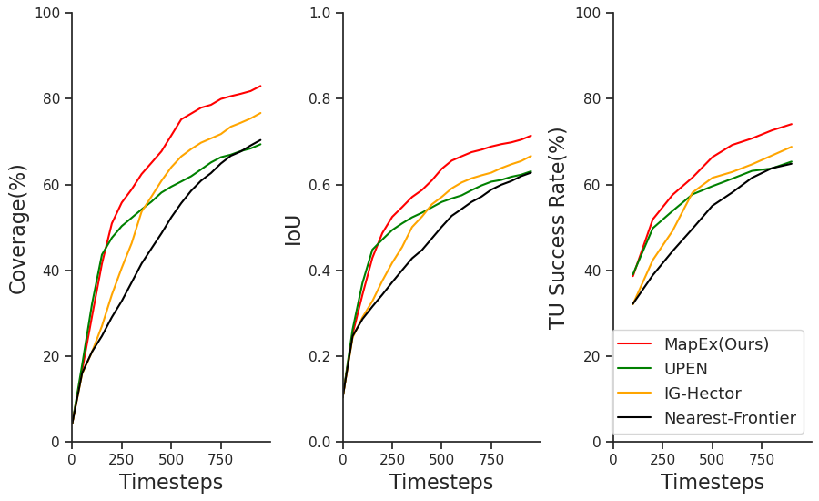

Exploration is a critical challenge in robotics, centered on understanding unknown environments. In this work, we focus on robots exploring structured indoor environments which are often predictable and composed of repeating patterns. Most existing approaches, such as conventional frontier approaches, have difficulty leveraging the predictability and explore with simple heuristics such as "closest first". Recent works use deep learning techniques to predict unknown regions of the map, using these predictions for information gain calculation. However, these approaches are often sensitive to the predicted map quality or do not reason over sensor coverage. To overcome these issues, our key insight is to jointly reason over what the robot can observe and its uncertainty to calculate probabilistic information gain. We introduce MapEx, a new exploration framework that uses predicted maps to form probabilistic sensor model for information gain estimation. MapEx generates multiple predicted maps based on observed information, and takes into consideration both the computed variances of predicted maps and estimated visible area to estimate the information gain of a given viewpoint. Experiments on the real-world KTH dataset showed on average 12.4% improvement than representative map-prediction based exploration and 25.4% improvement than nearest frontier approach.
Tl;dr - Predict multiple maps → estimate uncertainty and sensor coverage → explore to build accurate maps faster
Given the observed occupancy grid maps, our LaMa model predictor can generate reasonable predicted maps that are close to the ground-truth maps. These predictions are used in MapEx for probabilistic raycasting and viewpoint scoring.
Left: Conventional raycasting using only the observed occupancy grid map tends to overestimate the potential sensor coverage at a given viewpoint.
Middle: Deterministic raycasting with a predicted map can address this issue but often terminates rays prematurely if the predictions are inaccurate, leading to an underestimation of the information gain at the viewpoint.
Right: To overcome these limitations, we employ probabilistic raycasting on the mean predicted map. Each ray begins with an initial accumulated occupancy value of 0. As the ray traverses through the pixels of the mean predicted map, it incrementally adds the occupancy value of each pixel. Once the accumulated value reaches a predefined threshold, the raycasting process stops.
Given ray end points, we perform a flood-fill algorithm to generate a sensor coverage mask, and then mask out already-observed areas from the sensor coverage mask to generate a visibility mask.
Using probabilistic raycasting on the mean predicted maps, we generate a visibility mask that probabilistically represents the unknown area estimated to be visible at each viewpoint.
We model the uncertainty of the predictions, by computing the pixel-wise variance of ensemble of map predictions.
 To compute the information gain at each viewpoint, we use both the visibility mask generated from probabilistic raycast and the variance map. We sum the values of all pixels in the variance map that also fall within the visibility mask.
This probabilistic information gain estimates the potential reduction in uncertainty, not just by considering the size of observable area but also the variance it will cover.
Our exploration approach estimates probabilistic information gain from predicted maps to use in a frontier explorer. First, a robot accumulates its observations into a top-down observed occupancy map which is then passed to an ensemble of map predictors to generate multiple map predictions. For each possible frontier, information gain is calculated from the mean and variance of the predicted maps. Finally, the frontier with the highest reward is chosen as the next goal.
MapEx explores the map best resulting in the most accurate predicted map. In contrast, UPEN which optimizes for high variance without sensor coverage, searches a limited area. IG-Hector only considers sensor coverage and does not explore sufficiently at the start due to inadequate map predictions.
We show examples of MapEx frontier scoring. MapEx jointly reasons on sensor coverage and uncertainty to guide predictions. The left image shows a top-scoring frontier with high sensor coverage with medium uncertainty. In contrast, the right image presents a scenario where MapEx selects a frontier that covers smaller area but has high uncertainty, rather than the one with higher coverage but less potential for learning.
MapEx outperforms map prediction-based and nearest exploration planners in terms of Coverage, Predicted IoU, and Topological Understanding metrics.
We thank Siddarth Narasimhan for sharing a more processed KTH dataset and providing valuable insights into baseline reproduction. We thank Simon Stepputtis, Yaqi Xie, David Fan and Mononito Goswami for helpful discussions.
@article{ho_kim2024mapex,
title={MapEx: Indoor Structure Exploration with Probabilistic Information Gain from Global Map Predictions},
author={Ho, Cherie and Kim, Seungchan and Moon, Brady and Parandekar, Aditya and Harutyunyan, Narek and Wang, Chen and Sycara, Katia and Best, Graeme and Scherer, Sebastian},
journal={arXiv preprint arXiv:2409.15590},
year={2024}
}